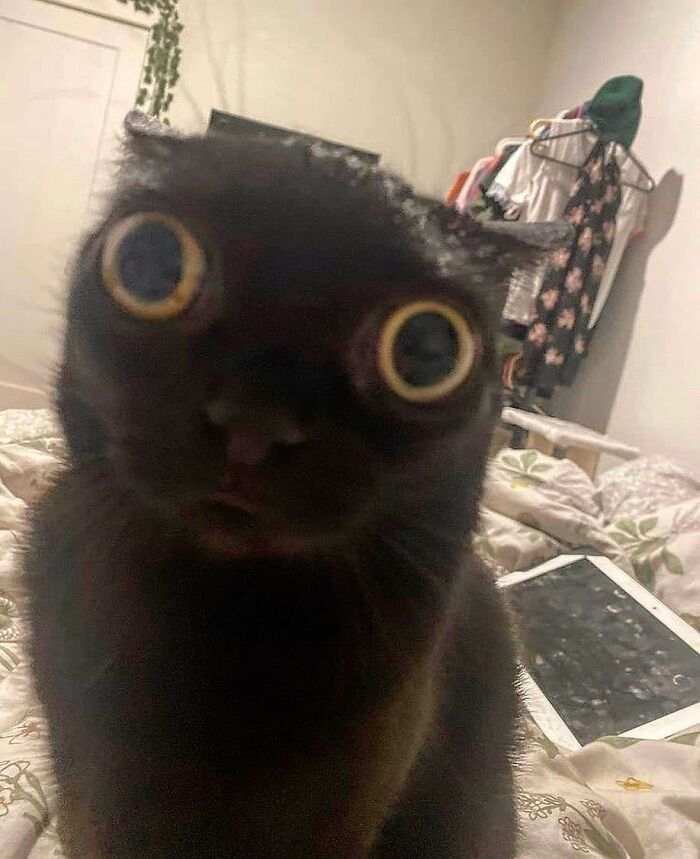

Hejka mam na imię Hania. Lubię słodkie kotki. To jest moja pierwsza strona. Robie ją z poradnika od super Norberta. Wszystko umiem, bo jestem mądra, a nie dlatego, że dostałam super poradnik :P
DOBRA NORBERT MASZ BANA JEDNAK BO NIE ZAUWAZYLAM KURNA ZADANIA NIŻEJ. JA WALE. ZROBIE CI TOP 3 KOTKI
kot typu usmiechniety
Zalety:
kot typu mega zdziwiony
Zalety:
kot typu mega smutny
Zalety:
Stronę wykonała: Hanka